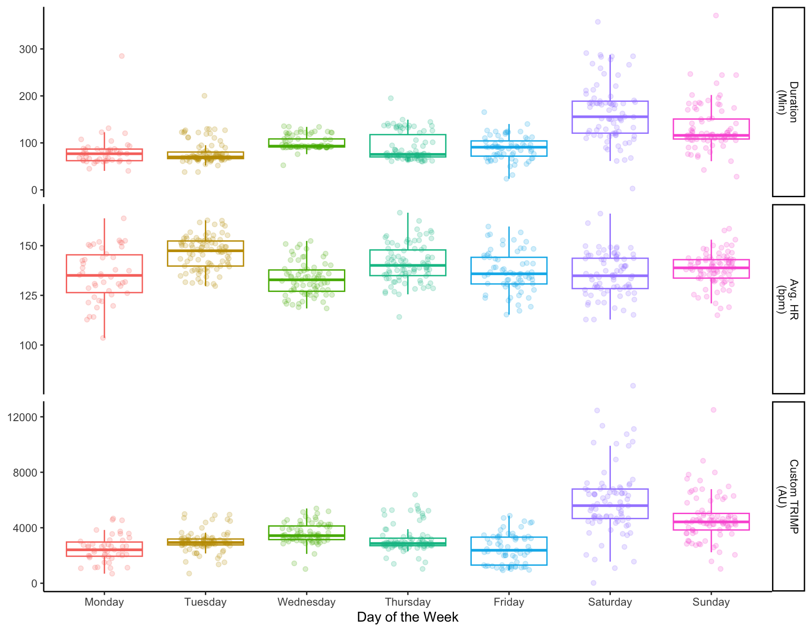
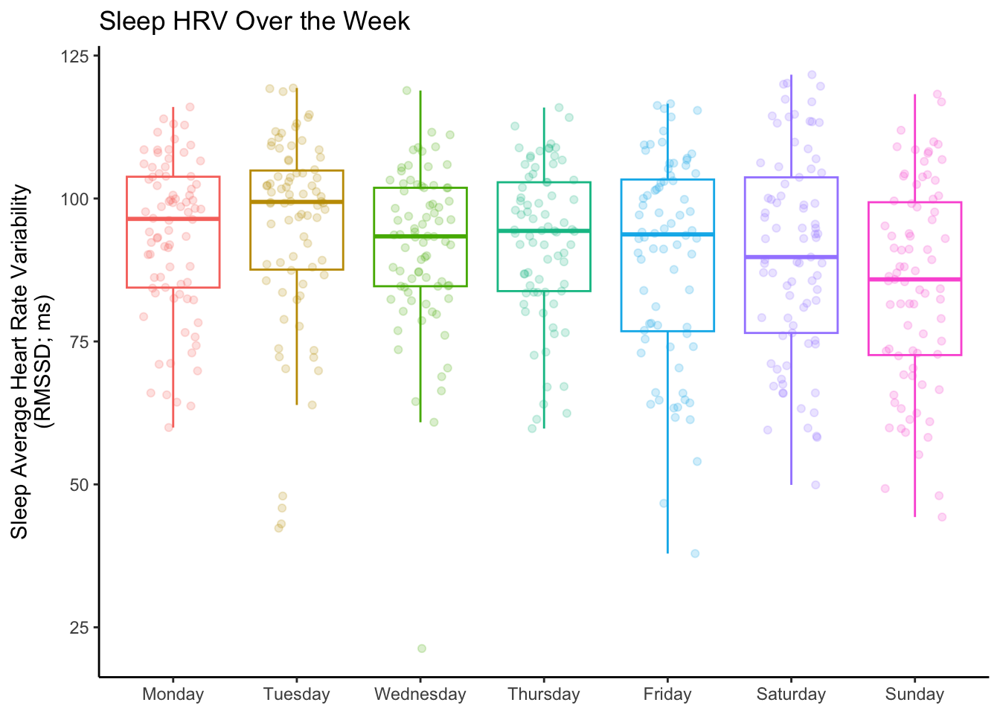

Weekly Trends
Data Exploration
While there are many ways to model the data, the first step can, and should, always be data exploration. In the instance of health behaviors, it’s important to remember something simple, but often forgotten: our behaviors are largely determined by our life. In particular, most people operate on a weekly schedule, typically something resembling 5 days of work and 2 days off of work.
Thus, it makes sense to start exploring the data on a weekly basis.
Day of the Week
For example, we can start by characterizing what changes occur over a week, since this is how we often set up training schedules and have our life events scheduled.
Exercise
Exercise Type
Below is a demonstration on the percentage of activities performed on each day of the week. This is roughly analagous to the odds that I would do a particular sport on a particular day.
Note:This does look different during different phases (I was still swimming less during 2021 due to COVID and life), but some patterns still stand out. For example, I almost always do my Tuesday track workout, a Wednesday bike ride, and another run on Thursday (although for awhile I was doing two-a-days with a bike in there as well). Additionally, if I swim, it’s pretty much only Mondays or Fridays.
For product builders, AI coaching programmers, or other individuals working with this kind of data, it might be important to keep track of patterns in something like the type of workout completed and encouraging consistency, as many good coaches will attest to the power of consistency in training.
Exercise Timing
This next plot breaks down the distribution of when I typically work out each day.
Again, there were lots of different factors that changed over the entire window, but it typically looks like I prefer to work out after work on Mon/Tues/Fri, maybe before work on Wed/Thurs (typically in the summer when it’s warmer), and morning on the weekends.
Some smart watch users might notice that this might be why they get the “You’re usually active by now” or similar. More importantly, as a later blog post will cover, this is a potentially important factor to consider when modeling training and recovery, as proximity before bed may be an important factor on sleep quality.
Exercise Characteristics
The next plots show duration, average heart rate, max heart rate, and a custom TRIMP score for each day of the week. It should be noted that I typically do a hard track workout on Tuesdays, do a medium-sized ride on Wednesday, and long runs/rides on the weekends, which all should be explained in the graphs.

Biometrics
The exercise component pretty simple when laid out in terms of how I schedule my week, but what about biometrics?
There is lots to cover, but I’m hightling two variables in the interest of keeping the article short: Sleep HRV and Sleep Session Duration.

It’s interesting to me to see that I generally have the highest sleep average HRV reported on Tuesday (Monday’s night of sleep), which likely follows that Mondays are my easiest workout days. Then there’s a small but noteworthy trend for my sleep average HRV to decrease on the weekends. Friday morning (sleep from Thursday night) seems to be a wild-card, and may be due to the fact that I sometimes did two-a-days and/or pub trivia in the evening, which we can dive into later.
Although this metric is the simplest of the ones the Biostrap measures, it surprised me the most (which goes to show how easy it can be to miss trends without data analysis). It appears I spend less time in bed as the week goes on, and then, more predictably, the weekends (Friday and Saturday nights) tend to have more variable sleep.
I suspect that this trend is brought about by getting busier throughout the week, as I’m likely trying to finish projects before the weekend, staying up a bit later each night, Then on the weekends it depends on whether I made plans the night before and/or want to sleep in a bit. The two graphs below somewhat demonstrate that indeed I tend to shift to a later sleep time as the work week goes on, and somewhat try to sleep in to make it up, but not enough. I didn’t even realize I was doing this!

The point of this section is not to do an exhaustive review of my biometrics, but rather to highlight the trends that occur through the week in my habits and connect them to physiological outcomes.
For those in the space of physiological monitoring, it is likely way more beneficial to figure out how to collect data alongside the wearables component and contextualize the “why” of the matter.
Summary
While this is just scratching the surface of the data I have, I do think it’s important to contextualize this for many scenarios. For example: modeling human behavior and physiological outcomes might make more sense when accounting for someone’s routine and behaviors; alternatively, tracking routine might enable better AI coaching and catch deviations in behavior or make better recommendations.
With this covered, I can move on to some cooler relationships in the data, causal inference, and hopefully a bit of timeseries model discussions. Please send me any questions you have about this data!